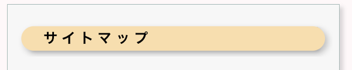

| 一般の方へ | ┳筋強直性ジストロフィーとは |
| ┃┣「筋強直性ジストロフィー」ってどんな病気？ | |
| ┃┣特徴的な筋症状 | |
| ┃┣筋強直性ジストロフィーは全身の病気 | |
| ┃┣筋強直性ジストロフィーの診断 | |
| ┃┗筋強直性ジストロフィーの治療 | |
| ┣筋強直性ジストロフィーの多臓器症状 | |
| ┃┣骨格筋障害 | |
| ┃┣呼吸障害 | |
| ┃┣心障害 | |
| ┃┣構音・嚥下障害 | |
| ┃┣代謝障害 | |
| ┃┣消化管障害 | |
| ┃┣眼症状 | |
| ┃┣耳鼻科的障害 | |
| ┃┣中枢神経障害 | |
| ┃┣内分泌障害 | |
| ┃┣肝・胆道系障害 | |
| ┃┣腎機能障害 | |
| ┃┣腫瘍 | |
| ┃┣骨異常 | |
| ┃┣末梢神経障害 | |
| ┃┣免疫異常 | |
| ┃┗皮膚症状 | |
| ┣筋強直性ジストロフィーと診断された方へ | |
| ┣妊娠・出産に関する注意事項 | |
| ┣手術・麻酔(鎮静)に関する注意事項 | |
| ┣治療開発の現状 | |
| ┃┣筋強直性ジストロフィーはリピート病の一種 | |
| ┃┣RNAのはたらき | |
| ┃┣筋強直性ジストロフィーはRNA異常症 | |
| ┃┣新しい薬の開発が進んできています | |
| ┃┣治験とは | |
| ┃┗稀少疾患で治験を円滑に進めるためには | |
| ┣患者登録について | |
| ┣IDMC-10レポート | |
| ┣AFMテレソンQ&A和訳 | |
| ┣日常に役立つヒント集 | |
| ┗患者と家族のためのガイドブック |
| 医療関係者の方へ | ┳筋強直性ジストロフィーのスクリーニング法 |
| ┣筋強直(ミオトニア)現象ビデオ | |
| ┣手術・麻酔(鎮静)に関する注意事項 | |
| ┣神経筋疾患患者での栄養所要量推定の工夫 | |
| ┣INQoL日本語版について | |
| ┣指定難病関係資料 | |
| ┣患者登録のデータ解析結果 | |
| ┗「神経内科」特集号 |
| 研究班の紹介 | ┳研究班の紹介 |
| ┣班員リスト | |
| ┣班の活動スケジュール | |
| ┣関連学会・研究班スケジュール | |
| ┣実施中の臨床研究 | |
| ┃┣呼吸障害グループ | |
| ┃┣循環器障害グループ | |
| ┃┣代謝障害グループ | |
| ┃┗中枢神経障害グループ | |
| ┗実績報告書 |
| その他 | ┳市民公開講座 |
| ┣リンク | |
| ┗サイトマップ |